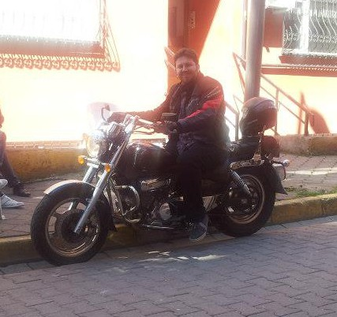

|
Istanbul is a very crowded city, therefore the
traffic is also crowded. Public transportation solutions
are there, but I found out that the best soluion is to
use a bike. It is horrbily cheap (not to buy and
register, but) to use one, and you can go whereever you
want without computing the optimal path you should take
with various kinds of public transportation. There is of
course a risk of accidents (as my mother always
rightfully says), but as my very experienced bike driver
cousin says, "biker creates the danger himself". So in
my experience as well, as long as you assume everyone in
traffic to be suicidal psychopaths while driving, you'll
do fine.
Until one year ago, I was driving a Regal Raptop
DD-250E-10, a.k.a. Spider 250, a very nice looking
bike. Here's an old photo:
One year ago, I changed this bike with a Hyosung
GV250 cruiser, because it is not as good as it looks in
terms of gearbox etc. This one is better for travel, as
well as durable in terms of the lifetime of inner
equipment. My brother traveled along 700-800 km and I traveled about 1400 km long range with
this bike and we both are really ok with
it. Here's again another photo of myself on it:

|
{kind=link}

{kind=link}